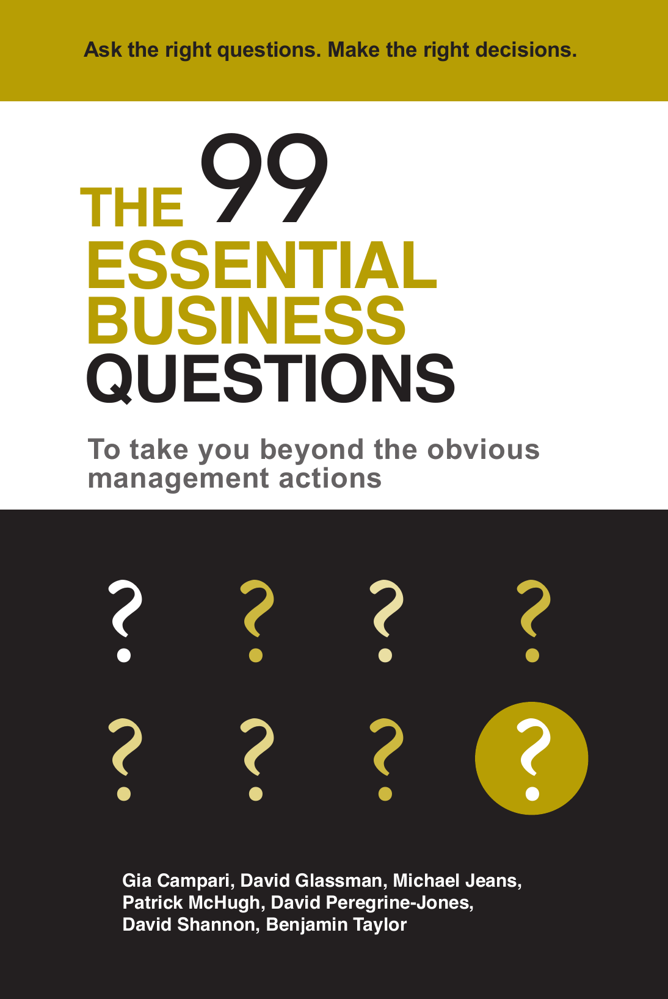

Gia Campari
Leadership, organisational change, and performance.
Gia on LinkedIn ↗The book of questions
To take you beyond the obvious management actions.
Gia Campari · David Glassman · Michael Jeans · Patrick McHugh · David Peregrine-Jones · David Shannon · Benjamin Taylor
01 / The questions
Search all 99 questions, or choose a situation or dimension.
The authors identify six questions that can be used in any situation.
02 / Restored from the manuscripts
Each runs between two poles.
The original scheme offers another way to find a question.
The early manuscripts organised questions through ten dimensions, as well as situations and linked sequences. The dimensions were dropped before publication. They’re restored here from those earlier documents; they don’t replace the book’s situation links.
03 / Around the questions
The authors’ examples, methods, and other writing.
Questions 73, 83, and 97, applied to the choices between work and family.
Gia Campari & Benjamin Taylor · June 2017 · AudioA conversation on The Outliers Inn.
Gia Campari · April 2017Gia’s account in the SRI Alumni newsletter.

05 / The book
To take you beyond the obvious management actions.
Published by Filament Publishing in 2016. The book brings together the questions, reasons for asking them, possible insights, links to other questions, and management situations.
Print ISBN 9781910819890
Ebook ISBN 9781911425694
PDF: revised print layout, 23 February 2017. Includes the illustrations, diagrams, and author biographies.
The writing is credited to its authors. Development material is dated and labelled. The earlier dimensions are retained as an additional index.